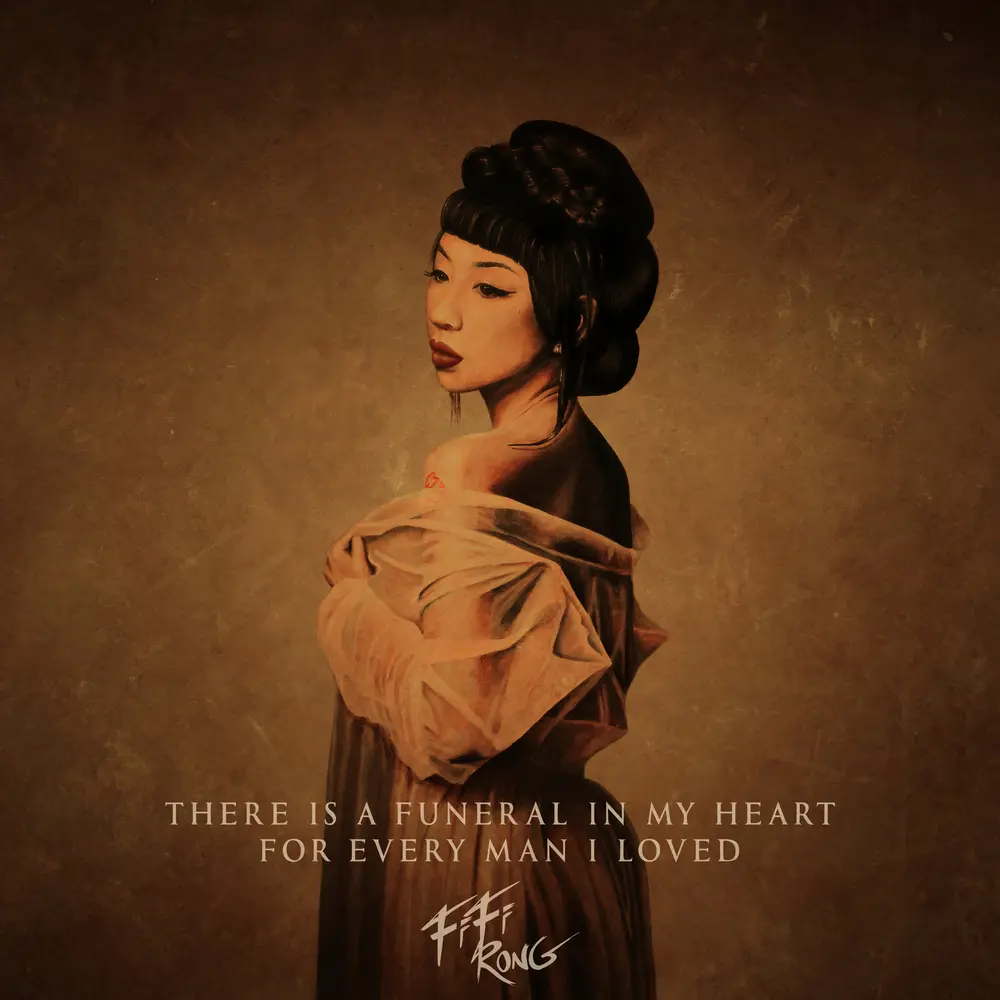

Album#3
There Is A Funeral In My Heart, For Every Man I Loved (心葬)
{kind=link}

专辑信息
- 专辑名称：There Is A Funeral In My Heart, For Every Man I Loved (心葬)
- 歌手：FiFi Rong (Home Page)
- 年份：2021-12-10
- 风格：前卫流行 (Avant-Pop)
- 时长：约 53 分钟


在我的心里，似乎经历过无数次葬礼
悼念深爱过的人
这是一个决裂，孤独的仪式
他们来去无常，最后一个个的消失
但是死亡是绝对的
所以，就让他们在我心里死去，因为
只有彻底放弃和遗忘，才能获得重生
来不及 Out Of Clock
前阵子又听到了方大同的 Run from Your Love (MV)，一首我很喜欢的歌，单曲听过很多遍。尤其喜欢中间 Fifi Rong 的那段，喜欢她的声音，也喜欢那段旋律。
她的声音，有时会让我想起这首歌: 2021 by LÜCY，可能听起来有点像。
于是好奇地搜了一下 Fifi Rong，找到了《心葬》这张专辑，听了一下很是喜欢。整张专辑听完，感觉被专辑营造的情绪包裹着，沉浸其中。
专辑的封面给人一种陈旧的感觉，封面中的 Fifi Rong 看起来像是民国时期的人，脸上神情是失落？是心死？会让我联想到《花样年华》这部电影。
关于封面：
我委托我的尊敬的朋友与支持者 Shane Rodrigues 创作一幅真人大小的超写实丙烯画作，这一构想源自我希望以“声音的绘画”来致敬这些年为打造这张双专辑所付出的岁月。

这是一张双专辑，如果你买的是黑胶，会发现里面有两张碟，一张是《There Is A Funeral In My Heart, For Every Man I Loved》，一张是《心葬》。专辑的英语和中文各占一半，体现了 Fifi Rong 中英混血的身份，反映她文化的双重性。
关于专辑，Fifi Rong 也写了一段介绍：
更深的旅程：痛苦、接纳与超越
这张专辑是人类处境原型的肖像，以一系列单相思的爱情故事呈现，视角来自一位悲剧性且自愿陷入从一开始就注定失败的浪漫关系的女性。某种程度上，她自编自演，不断以仪式般重复扮演同一个角色，却对动机毫无察觉。
她在依恋与分离之间循环往复，每一次相遇与离别都把爱象征为一团难以捉摸的火焰，最终像昨日梦境般熄灭。在她的歌曲中，她讲述这些故事的同时寻找答案，最终追求超越。她拥抱每一次自选经历的痛苦，但必须独自愈合伤口，因此不可避免地离开每一种境遇，回到她与生俱来的超凡状态。
这解释了为什么她会为每一个曾经真心相爱的男人举行葬礼仪式，却注定要忘记并从心里抹去他。尽管外表脆弱、女性化且带着忧郁，她却拥有不屈不挠的力量，使她每次都能真诚地投入爱，并为下一次情感冒险或人生动荡做准备。
不同性别的人在不同时间都能在她身上找到一部分自我，因为她体现了集体意识：恐惧、痛苦、不安全感、欲望、失落、失望、受苦、孤独以及被爱的渴望。她所承受的痛苦顺序象征着未觉悟的自我状态 ⸺ 那种有条件的爱。
在写这些歌时，我在情感上成为了她。
如果你对 Fifi Rong 感兴趣，也可以看看 我的故事 ｜ Fifi Rong。
除了这张专辑，也可以听听她其他的歌，推荐一首我喜欢的 Cold in You。
歌词摘录
来不及 Out Of Clock
我原谅了他们
但有谁原谅我
有谁听我诉说
可是我却再也来不及
再也等不及
再也来不及和他最后走到一起
流尘 Only Man
我只是你梦中的流尘
你却是我的毕生
我只是她们其中一人
但你拥有我的完整
自爱 Love Yourself First
他们的爱，他们的爱，他们的爱无法拯救我
他们的爱，他们的爱，他们的爱永远不够多
给我自己的爱，自己的爱，自己的爱最简单快乐
给我自己的爱，自己的爱，自己的爱是最终解脱
另一个我 Another Me (旋律好听)
为了你我可以走，可以留
可以永不回头
但是我却不能够，勇敢接受
爱情落叶知秋
只要能心甘情愿，沉默无言
一切变得简单
但是我执迷不悔，早已疲惫
心里还流着泪
你再遇不到另一个，另一个我
但是有一天你会，找到快乐
距离 Distance
你总是，忽近忽远
短暂的误以为浪漫
一转眼感觉已改变
再多的爱敌不过时间
当你对我说，平淡无奇的话
我屏住呼吸，悄悄用心来听
当你望着天，那蓝色的深渊
我只要一个吻，然后慢慢沉沦
金石为开 Alchemist (旋律好听)
原谅了全世界原谅了你
最后再原谅我自己
耳边传来了一个声音
说那原来的我已死去
终于明白了我根本不该怀疑
不该怀疑
因为一切都是爱
都是爱
足够 I'm Enough
繁华的尽头，一场海市蜃楼
不用再多说什么
已经不可救药了
离开时我会坦然自若
没谁欠谁更多
我不怨，不管是谁的错
但是不要告诉我
你的心从没靠近过
难道我不值得
你的眼泪
和你的心碎
你的疲惫
我曾是你的唯一
一千个理由，和一万个借口
说不爱就不爱了
一转眼就消失了
原来我们竟如此脆弱
爱一碰就破碎了
难道我永远属于寂寞
我将每一滴眼泪
和一阵阵袭来的心疼
化作我的旋律，和我的歌声
我的旋律，和我唱的歌
这永远是我的唯一
永恒不变的美丽
梦之哀恋 Dream On
我陷入深渊于你眉目间
我生与死，取决你的吻
离开你 Stay Away (旋律好听)
到最后 到尽头
还是要走
情已旧 心不留
该放开手
到最后 到尽头
还是要走
放弃我的所有
彻底的忘记你
零度空间 QFT
呼吸着存在着感受着
看尽潮起潮落
看那天外星河亿万光年以前的那某一个瞬间
一辈子一眨眼，就是一眨眼
网易云里没有 There Is A Funeral In My Heart, For Every Man I Loved 的歌词，如果你对歌词感兴趣可以看 There Is A Funeral In My Heart, For Every Man I Loved | bandcamp。